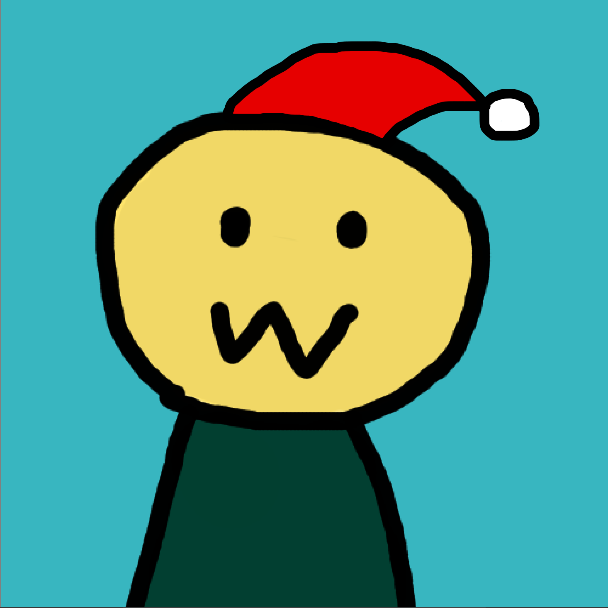
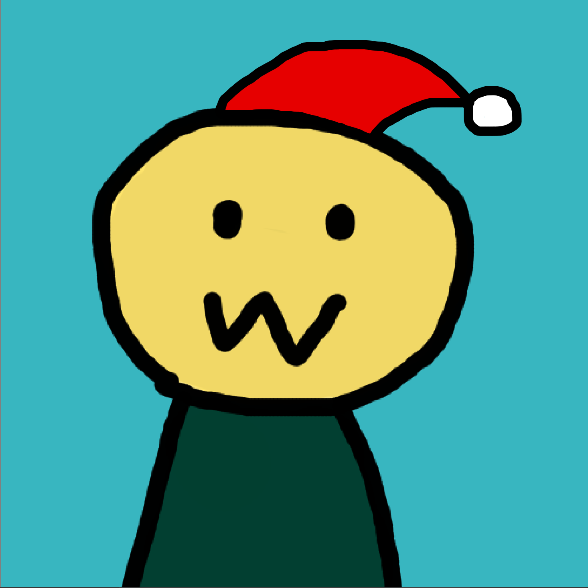
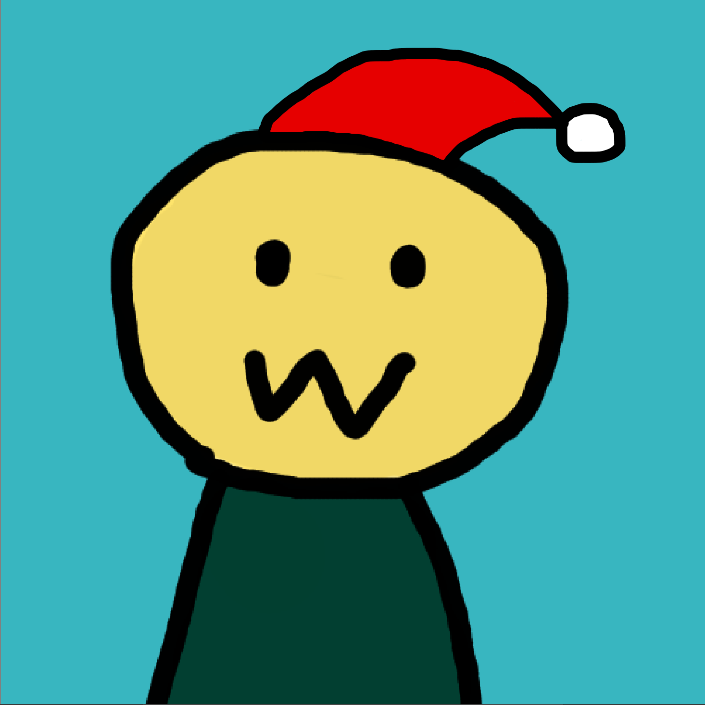

Merry Christmas, this is Wayne!
I love game development and has several projects I attend after class.
In this portfolio I am going to talk about them.
Thank you for viewing!
Computer Game Science and Software Engineering
Junior in University of California, Irvine

Merry Christmas, this is Wayne!
I love game development and has several projects I attend after class.
In this portfolio I am going to talk about them.
Thank you for viewing!

Lobster Revolution 2018 November
Programmer on a 7-member team
This is a card game about lobsters! We have been working on this
project for a whole month and I am working on the battle system.
I have never maken digital card games before, so I enjoy programming
this game.
The first thing I tried to implement is dragging the card to floor.
I use raycast to check what player touches when they press down and
release mouse, so I can know if they are clicking a card and if they
are dragging it to a spot on the floor. Later there are more things
to test, like commanding lobsters to attack/denfense and choosing
targets/materials. I add variables to store the current states of
the game and test different stuffs when player press down/release
mouse button at different states.
GitHub
Click me to play the game!

Riley's adventures in Terribleland 2018 Summer
Solo project
It's a birthday present I made for my awesome fantastic wonderful friend.
I came up with an idea that the player becomes an infant in another world,
and need to grow up to 21 years old to come back. I start to add relevant
stuff around this idea, finally it became something like this.
Map tiles will change randomly after player pass them. Different things
will happen when players step on different tiles. Question mark tile is
the most common one and will trigger a random event. There is also a
shop where players can buy items with their money.
GitHub

InterShellar 2018 Fall Game Jam
Programmer on a 6-member team
A 2d game finished at a game jam in Fall 2018. My teammates are
wonderful and I had a great time working with them.
In this project I worked on the planets which attract player to
rotate around them. One teammate added a circle showing the orbit
to make it look greater. The enemy who will shoot at players and
the camera which can follow player and zoom in/out are also
interesting to program. I tried some new things like particle
system in this game jam. Our artist created art very fast so I
also made a bunch of animation controllers.
GitHub
Click me to play the game!

Boring Octopus 2017 Summer
Solo project
A simple 2D infinite flyer game I made during summer vocation.
It was my first time to try making a phone game, and I found
that was not difficult with Unity.
Players control the character to fly and shoot in a randomly
generated map. The game records players' hightest score and
their setting for volumn and language.
GitHub
Click me to play the game!

Painting Demo 2018 Summer
Self Practice
This is a practice I did during the summer. I tried to make a
painting tool in Unity.
At first I created objects at the mouse position but it made
eraser difficult to program. Then I separated the board to
different pixel blocks and used array to store the information.
I put objects at the position of pixels but when there are too
many objects the fps became very low. In the end I put a
transparent picture on the board and called Unity's function
to modify the pixel of the picture.
Though it is still buggy when player draw fast, trying to do
new things is interesting.
| Contact: | |
| weiyanz@uci.edu | GitHub: https://github.com/TomatoOmelet |
| 949-247-6667 | Linkedin: https://www.linkedin.com/in/weiyan-zhu/ |